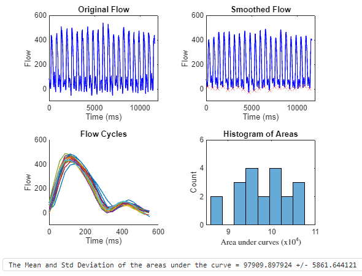

Digital Signal Processing: ECG
Project Focus: Filtering and analyzing signals to extract meaningful physiological data.
Spring 2024, MATLAB Programing
Project Overview
The goal of this project was to analyze MRI-derived blood flow data from the left ventricle during exercise and estimate the volume of blood pumped per cardiac cycle. Using MATLAB, I processed the provided dataset by first applying digital filtering techniques to remove noise and enhance signal clarity.
Next, I identified individual cardiac cycles by detecting troughs in the flow-time data, marking the beginning of each heartbeat. The signal was then segmented accordingly, allowing for further analysis. To estimate stroke volume—the amount of blood ejected per heartbeat—I implemented the trapezoidal rule for numerical integration, calculating the area under each flow-time curve.
This approach provided a quantitative measure of cardiac output based on MRI data, demonstrating the effectiveness of signal processing and computational analysis in biomedical applications. The final results included visual representations of the raw and processed data, segmented heartbeats, and a histogram of computed stroke volumes. This project highlights my skills in MATLAB programming, signal processing, and numerical methods for biomedical analysis.
Processed Data & Stroke Volume Estimation
The graph below shows the filtered MRI blood flow signal with detected cardiac cycles. Using MATLAB, the signal was processed to identify individual heartbeats and estimate the blood volume pumped per cycle.
MATLAB Implementation
The following MATLAB script loads and processes the blood flow data, applies smoothing, detects troughs, and estimates stroke volume:
clear; clf; clc;
flowData = load("flow.csv"); % Load Data
smoothedFlowData = flowData; % Copy original data
smoothedFlowData(:,2) = smoothdata(flowData(:,2), "gaussian", "SamplePoints", flowData(:,1), "SmoothingFactor", 0.25);
[troughs, cycle_times, cycle_flows, areas] = processFlow(smoothedFlowData); % Process Flow
displayResults(flowData, smoothedFlowData, troughs, cycle_times, cycle_flows, areas); % Display results
fprintf("Mean ± Std Dev of stroke volume = %f ± %f", mean(areas), std(areas));
Full MATLAB functions for **filtering, segmentation, and stroke volume estimation** are available on my GitHub repository:
View Full Code on GitHub